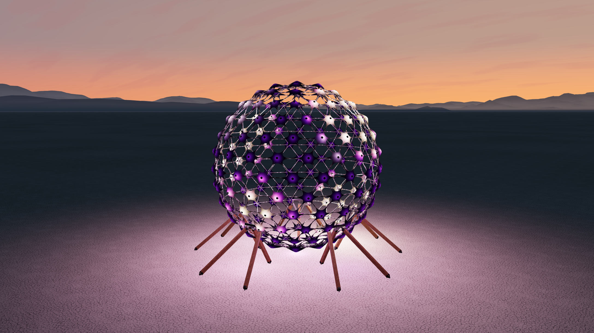
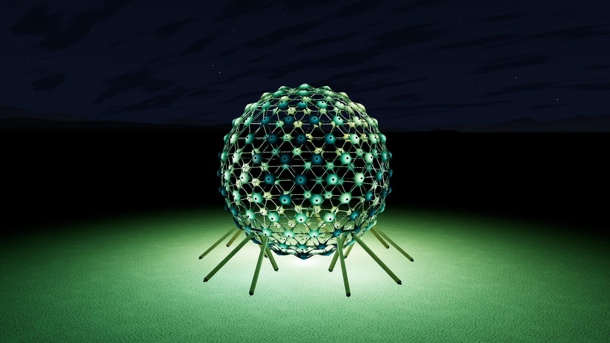
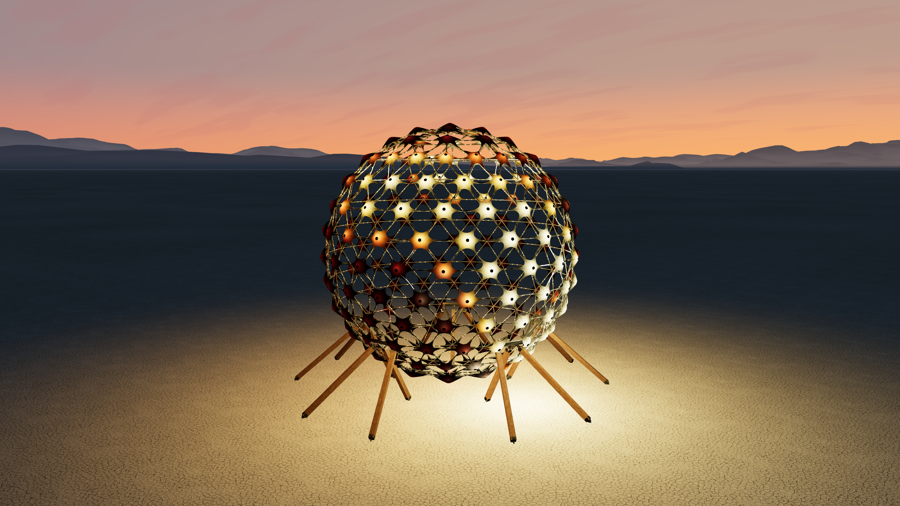
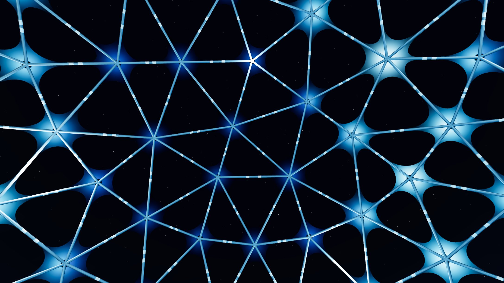
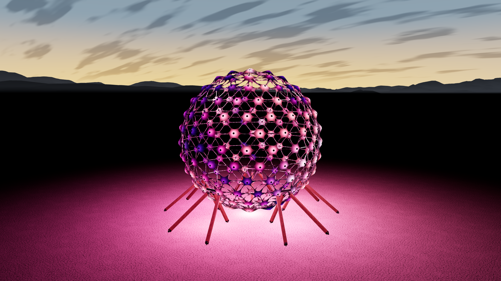

01 / A light show
Invent the movement.
Sample a field of light over the sphere. The shared renderer takes care of the sails, LEDs, music features, and transitions.
Write your first show ↗Light / Color / Music
A glowing sphere. An open desert. A piece of music that changes everything.
Tiny Sphere brings a world of moving light into your browser, with room for you to make it your own.
Step inside ↗
Nine light shows spread color across 212 fabric sails. Shift from liquid violet to long aurora ribbons, from slow amber islands to music-driven color. Keep looking. There is always another way to see it.

Long ribbons, deep greens, open sky.

Slow amber islands in the last light.
Travel into the exact center and look in any direction, including straight up. Move through the fabric and frame, or pull back until the mountains become part of the composition.

Start with an idea and a small JavaScript file. A new show gives the light its motion. A theme gives the whole scene a mood. Both have working examples and a place in the source.
01 / A light show
Sample a field of light over the sphere. The shared renderer takes care of the sails, LEDs, music features, and transitions.
Write your first show ↗02 / A visual theme
Choose a show, a color palette, a sky, and a pace. A theme is a small preset you can tune without touching the renderer.
Create a theme ↗The contribution points sit up front. Audio, cameras, geometry, and the environment each have their own home. The browser runs native JavaScript modules with Three.js.
src/ shows/ Your light-show modules themes/ Your presets and palettes engine/ The shared light field audio/ Playback and analysis camera/ Orbit, gestures, and lenses environment/ Sky, playa, and mountains ui/ The permanent controls settings/ The arrival preset assets/ Models, textures, and music vendor/ Three.js examples/ A small place to start tests/ Checks that travel with the source docs/ The how and the why
The contributor studio lets you audition every registered show and theme, move between exterior and interior views, and export an actual frame with repeatable settings.
The studio is a local development page. The main experience keeps its simple controls.

Run it locally
With Node.js 22+ and Python 3.9+ installed, start the project from its source folder:
npm run dev127.0.0.1:4192/TinySphere/dist/ ↗
No npm packages to install. Rebuild after source edits. Run
npm run check before proposing a contribution.